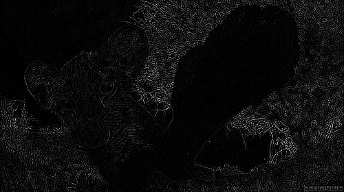
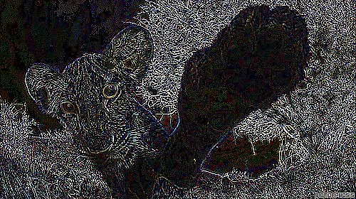
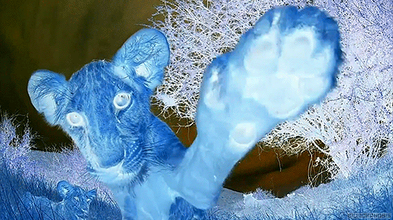

Computational Efficiency
Video operations measurement
Una de las características más importantes en el procesamiento de videos es la frecuencia de fotogramas por segundo, el cerebro humano tiene la capacidad de procesar de 10 a 12 fotogramas por segundo; en caso de aumentar esa tasa. el cerebro lo percibe como movimiento, característica muy importante al momento de exponer una imagen.
La siguiente implementación se encarga de medir la tasa de fotogramas por segundo, al realizar la razón entre la cantidad de fotogramas que se expusieron desde el tiempo 0 hasta la actualidad y la variables que se encarga de obtener la diferencia de tiempo transcurrido en el paso de los fotogramas, en la interacción se puede observar como esta taza decae cuando se aplica una máscara de convolución y aumenta cuando se aplica una escala de grises.
Comandos por teclado
| Tecla | Operación | Expresión | Eficiencia Gerson | Eficiencia Steven | Eficiencia David | Promedio | Video resultante |
|---|---|---|---|---|---|---|---|
 |
Identidad |  |
30,0 | 30,0 | 30,0 | 30,0 |  |
 |
Acentuar los bordes(Máscara de Convolución) |
 |
1,76 | 2,4 | 1,05 | 1,74 | |
 |
Repujado(Máscara de Convolución) |
 |
1,8 | 2,3 | 1,2 | 1,77 | |
 |
Detección de bordes(Máscara de Convolución) |
 |
1,65 | 2,1 | 1,16 | 1,64 |  |
 |
Detección de bordes(Máscara de Convolución) |
 |
1,7 | 2,1 | 1,31 | 1,70 | |
 |
Detección de bordes(Máscara de Convolución) |
 |
1,7 | 2,14 | 1,4 | 1,75 |  |
 |
Enfocar(Máscara de Convolución) |
 |
1,73 | 2,03 | 1,25 | 1,67 | |
 |
Desenfoque de cuadro(Máscara de Convolución) |
 |
1,83 | 2,49 | 1,35 | 1,89 | |
Media aritmética(Escala de Grises) |
 |
13,6 | 21,9 | 11,8 | 15,77 | ||
 |
Componente más grande(Escala de Grises) |
 |
10,2 | 15,4 | 8,6 | 11,40 | |
 |
Rango medio(Escala de Grises) |
 |
8,5 | 10,6 | 7,7 | 8,93 | |
Promedio ponderado Luma(Escala de Grises SDTV) |
 |
13,6 | 22,3 | 11,2 | 15,70 | ||
Imagen Opuesta(Colores Complementarios) |
255 - |
17,3 | 27 | 15,3 | 19,87 |  |
Image of Lioness and her Lion cub (Panthera leo) are a species in the family Felidae. Source: Giphy.Lion Hello GIF - Find & Share on GIPHY
p5*js Code
let value; // permite escoger que filtro se va a realizar
let matrixsize; // tamaño de la matriz
var matrix; // matriz
let canvas_01;
let canvas_02;
var heightI = 500; // altura del lienzo
var widthI = 500; // anchura del lienzo
function preload() {
img_01 = createCapture(VIDEO);
img_02 = createCapture(VIDEO);
img_01.hide();
img_02.hide();
}
function setup() {
createCanvas(widthI*2+20, heightI);
frameRate(30);
background(255);
canvas_01 = createGraphics(widthI, heightI);
canvas_02 = createGraphics(widthI, heightI);
}
function draw(){
drawCanvas_01();
drawCanvas_02();
selectValue();
image(canvas_01, 0, 0);
image(canvas_02, widthI+10, 0);
}
function keyPressed(){
matrixsize = 3;
switch(key) {
case 'a':
value = 1;
break;
case 'b':
value = 2;
break;
case 'c':
value = 3;
break;
case 'd':
value = 4;
break;
case 'e':
value = 5;
break;
case 'f':
value = 6;
break;
case 'g':
value = 7;
break;
case 'x':
value = 'c';
break;
case '0': // Identidad
value = 10;
matrix = [ [ 0, 0, 0 ],
[ 0, 1, 0 ],
[ 0, 0, 0 ] ];
break;
case '1': // Enfocar. Acentúa los bordes
value = 11;
matrix = [ [ -1, -1, -1 ],
[ -1, 9, -1 ],
[ -1, -1, -1 ] ];
break;
case '2': // Repujado
matrix = [ [ -2, -1, 0 ],
[ -1, 1, 1 ],
[ 0, 1, 2 ] ];
value = 12;
break;
case '3': // Detección de bordes
matrix = [ [ 1, 0, -1 ],
[ 0, 0, 0 ],
[ -1, 0, 1 ] ];
value = 13;
break;
case '4':
matrix = [ [ 0, 1, 0 ],
[ 1, -4, 1 ],
[ 0, 1, 0 ] ];
value = 14;
break;
case '5':
matrix = [ [ -1, -1, -1 ],
[ -1, 8, -1 ],
[ -1, -1, -1 ] ];
value = 15;
break;
case '6': // Enfocar
matrix = [ [ 0, -1, 0 ],
[ -1, 5, -1 ],
[ 0, -1, 0 ] ];
value = 16;
break;
case '7': // Desenfoque de cuadro (normalizado)
matrix = [ [ 1/9, 1/9, 1/9 ],
[ 1/9, 1/9, 1/9 ],
[ 1/9, 1/9, 1/9 ] ];
value = 17;
break;
case '8': // Desenfoque gaussiano 5 × 5 (aproximación)
matrixsize = 5;
matrix = [ [ 1/256, 4/256, 6/256, 4/256, 1/256 ],
[ 4/256, 16/256, 24/256, 16/256, 4/256 ],
[ 6/256, 24/256, 36/256, 24/256, 6/256 ],
[ 4/256, 16/256, 24/256, 16/256, 4/256 ],
[ 1/256, 4/256, 6/256, 4/256, 1/256 ] ];
value = 18;
break;
case '9': // Máscara de desenfoque 5 × 5 (sin máscara de imagen)
matrixsize = 5;
matrix = [ [ -1/256, -4/256, -6/256, -4/256, -1/256 ],
[ -4/256, -16/256, -24/256, -16/256, -4/256 ],
[ -6/256, -24/256, 476/256, -24/256, -6/256 ],
[ -4/256, -16/256, -24/256, -16/256, -4/256 ],
[ -1/256, -4/256, -6/256, -4/256, -1/256 ] ];
value = 19;
break;
default:
break;
}
}
// Funciones propias del desarrollo
const drawCanvas_01 = ()=>{ // pone el primer video en el lienzo 1
canvas_01.image(img_01, 0, 0);
canvas_01.textSize(40);
// imprime los frames por segundo
canvas_01.text( frameRate().toFixed(2) + " F/S" , 20, 400);
};
const drawCanvas_02 = ()=>{ // pone el segundo video en el lienzo 2
canvas_02.image(img_02, 0, 0);
canvas_02.textSize(40);
// imprime los frames por segundo
canvas_02.text( frameRate().toFixed(2) + " F/S" , 20, 400);
};
const selectValue = ()=>{
//selecciona el filtro a utilizar dependiendo del valor que tenga value
if( 0 < value && value < 10 ) {
filtrosBlancoNegro(value);
} else if(value === 'c') {
complementary();
} else if(value > 10) {
convolutions();
}
}
// Funciones para aplicar filtros
const filtrosBlancoNegro = (gray)=>{
let lightness = 210;
img_02.loadPixels();
for (let y = 0; y < img_02.height; y++) {
for (let x = 0; x < img_02.width; x++){
let index = (x+y*img_02.width)*4; // Posicion del pixel
let r=img_02.pixels[index+0]; // Componente Red
let g=img_02.pixels[index+1]; // Componente Green
let b=img_02.pixels[index+2]; // Componente Blue
let a=img_02.pixels[index+3]; // Componente Alpha
if (gray===1){
let I=(r+g+b)/3; // Promedio de los tres componentes
lightness = I;
} else if (gray===2){
let V= max(r,g,b); // Componente mas grande de un color
lightness = V;
} else if (gray===3){
let L=(max(r,g,b)+min(r,g,b))/2; // Promedio entre el componente mas grande y el mas pequeño
lightness = L;
} else if (gray===4){ // Promedio ponderado de RGB con corrección gamma (Luma)
let Y601= 0.2989*r + 0.5870*g + 0.1140*b; // SDTV
lightness = Y601;
} else if (gray===5){
let Y240= 0.212*r + 0.701*g + 0.087*b; // Adobe
lightness = Y240;
} else if (gray===6){
let Y709= 0.2126*r + 0.7152*g + 0.0722*b; // HDTV
lightness = Y709;
} else if (gray===7){
let Y2020= 0.2627*r + 0.6780*g + 0.0593*b; // UHDTV,HDR
lightness = Y2020;
}
img_02.pixels[index+0]=lightness;
img_02.pixels[index+1]=lightness;
img_02.pixels[index+2]=lightness;
img_02.pixels[index+3]=a;
if (gray===0){ // Imagen original
pixels[index+0]=r;
pixels[index+1]=g;
pixels[index+2]=b;
pixels[index+3]=a;
}
}
}
img_02.updatePixels();
}
const complementary = ()=>{
img_02.loadPixels();
for(var y = 0 ; y < img_02.height; y++) {
for(var x = 0; x < img_02.width; x++) {
let index = (x + y * img_02.width) * 4;
img_02.pixels[index + 0] = 255 - img_02.pixels[index + 0];
img_02.pixels[index + 1] = 255 - img_02.pixels[index + 1];
img_02.pixels[index + 2] = 255 - img_02.pixels[index + 2];
}
}
img_02.updatePixels();
}
const convolutions = ()=>{
img_02.loadPixels();
for (let x = 0; x < img_02.width; x++) {
for (let y = 0; y < img_02.height; y++ ) {
let c = convolutionAux(x, y, matrix, matrixsize, img_02);
let loc = (x + y*img_02.width)*4;
img_02.pixels[loc] = red(c);
img_02.pixels[loc+1] = green(c);
img_02.pixels[loc+2] = blue(c);
img_02.pixels[loc+3] = alpha(c);
}
}
img_02.updatePixels();
}
const convolutionAux = (x, y, matrix, matrixsize, img)=>{
var rtotal = 0;
var gtotal = 0
var btotal = 0;
var atotal = 0;
for (let i = 0; i < matrixsize; i++){
for (let j= 0; j < matrixsize; j++){
var xloc = x+i;
var yloc = y+j;
var loc = (xloc + img.width*yloc)*4;
loc = constrain(loc,0,img.pixels.length-1);
rtotal += ((img.pixels[loc]) * matrix[i][j]);
gtotal += ((img.pixels[loc+1]) * matrix[i][j]);
btotal += ((img.pixels[loc+2]) * matrix[i][j]);
atotal += ((img.pixels[loc+3]) * matrix[i][j]);
}
}
// Restringe el valor de RGB
rtotal = constrain(rtotal, 0, 255);
gtotal = constrain(gtotal, 0, 255);
btotal = constrain(btotal, 0, 255);
atotal = constrain(atotal, 0, 255);
// Retorna el color resultante
return color(rtotal, gtotal, btotal);
}